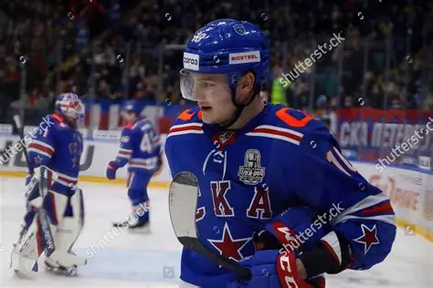
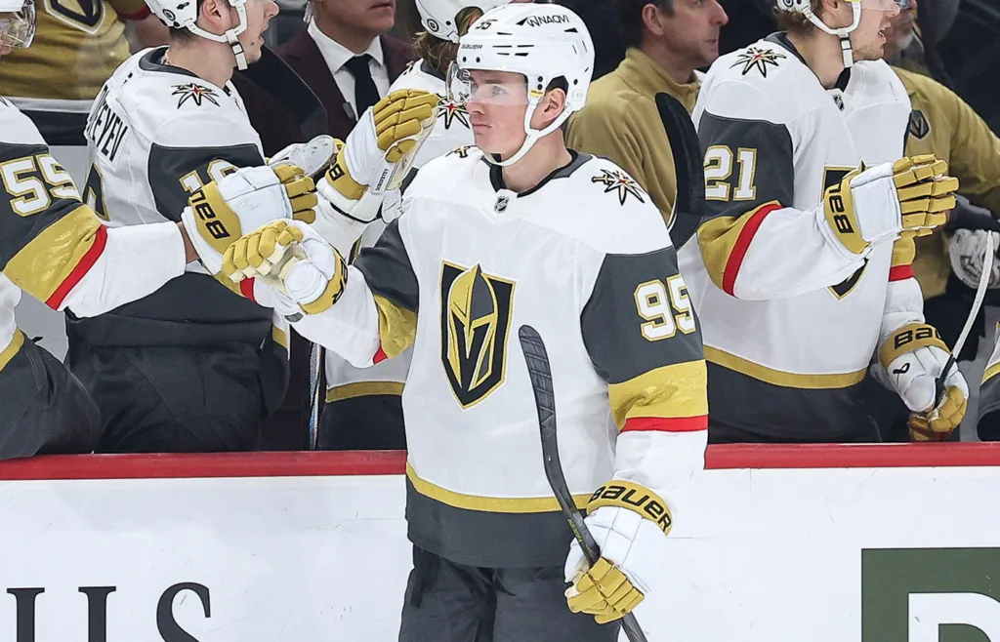
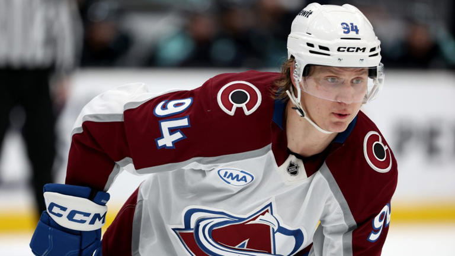
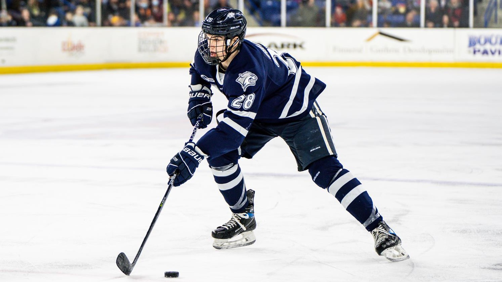
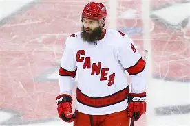

21 August, 2025
Player Spotlight: Zakhar Bardakov Joins Colorado Avalanche
Zakhar Romanovich Bardakov, born February 24, 2001, in Seversk, Russia, has taken a winding but impressive path to the NHL. After developing in the Russian junior system with Russkie Vityazi, where he produced 70 points in 104 MHL games, Bardakov broke into the KHL with HC Vityaz in 2020–21. In his first full professional season, he managed 11 points in 44 games while adjusting to the pace and physicality of top-tier competition.
His transfer to SKA Saint Petersburg in 2021 proved pivotal. Over the next three years, Bardakov established himself as a reliable bottom-six forward. He contributed both offensively and defensively, reaching 18 points in the 2022–23 season while logging significant minutes on the penalty kill. By 2024–25, he had taken on a leadership role as alternate captain, producing a career-high 35 points in 53 regular-season games and finishing with an impressive plus-20 rating. Across five KHL seasons, he totaled 79 points in 209 games and added 11 points in 41 playoff contests.
What makes Bardakov stand out is his gritty, two-way style of play. He has earned a reputation as a relentless forechecker, a heavy hitter, and a strong net-front presence. Coaches have long trusted him in penalty-killing situations, recognizing his defensive awareness and commitment. He also brings versatility, with the ability to play both center and wing, and has shown flashes of creativity when paired with skill-driven linemates. His maturity and leadership qualities—highlighted by wearing a letter for SKA—only add to his profile as a dependable team player.
However, Bardakov is not without weaknesses. He is not projected to be a high-end scorer at the NHL level and will likely fit best in a defensive, bottom-six role. His skating, while adequate, lacks the explosive first step that defines many NHL forwards, and it remains to be seen how he adapts to the smaller rinks and faster pace of the North American game. Discipline has also been an area of concern in the past, as he developed a reputation for taking emotional penalties early in his career, though he has acknowledged this and made strides to improve.
In March 2024, the Colorado Avalanche acquired Bardakov’s NHL rights from the New Jersey Devils as part of the trade involving Kurtis MacDermid. The Avalanche officially signed him to a one-year entry-level contract in April 2025. Through Russian media, Bardakov shared that he was assured he would not be relegated to the AHL, except in the case of a short-term conditioning assignment after injury. “If you’re asking if I’m ready to spend years fighting through the AHL, my answer is probably no,” Bardakov said, emphasizing his intent to compete directly for a spot on Colorado’s roster.
With his combination of grit, defensive reliability, and leadership, Bardakov arrives in North America with the clear goal of making an immediate impact. While questions remain about his offensive upside and ability to adjust to the NHL game, his style of play fits neatly into the Avalanche’s bottom-six structure. If he can translate his KHL success and bring the same edge and work ethic, Zakhar Bardakov may prove to be one of Colorado’s most intriguing additions heading into the season.

20 August, 2025
Victor Olofsson Joins the Colorado Avalanche
In a move that underscores their commitment to depth and scoring balance, the Colorado Avalanche have signed forward Victor Olofsson to a one-year contract for the 2025-26 NHL season. The financial terms of the deal have not been publicly disclosed.
Olofsson, 30, brings a wealth of experience to the Avalanche lineup. Over the past two seasons, he has demonstrated consistent offensive production. In the 2024-25 season with the Vegas Golden Knights, he recorded 29 points (15 goals, 14 assists) in 56 games, including six power-play goals and a franchise-record 10-game road point streak. His career trajectory includes three 20-goal seasons with the Buffalo Sabres, highlighting his ability to contribute offensively.
Olofsson's advanced statistics reveal a player who excels in areas the Avalanche value. His shooting percentage of 13.8% indicates efficient finishing ability. Additionally, his expected goals per 60 minutes (xG/60) and individual expected goals per 60 minutes (ixG/60) suggest he generates quality scoring chances at a high rate—metrics particularly beneficial for a third-line role.
Defensively, Olofsson maintains a positive on-ice expected goals differential, showing he does not compromise team defense for offense. This balance is crucial for a third-line winger expected to contribute both offensively and defensively.
The Avalanche's third line has often blended energy and scoring potential. Olofsson provides a seasoned sniper who can capitalize on opportunities created by his linemates. His ability to play both wings offers flexibility in line combinations, allowing head coach Jared Bednar to optimize matchups.
Furthermore, Olofsson's experience on the power play adds depth to Colorado's special teams. His proficiency in net-front presence and one-timer execution can enhance power-play efficiency, providing an additional weapon in critical situations.
Victor Olofsson's signing represents a strategic move by the Colorado Avalanche to bolster forward depth with a proven goal scorer. His advanced metrics suggest he will be a valuable asset on the third line, contributing offensively without sacrificing defensive responsibilities. As the Avalanche aim for another deep playoff run, Olofsson's experience and skill set make him a significant addition to their roster.

19 August, 2025
Avalanche Re-Signs Joel Kiviranta on Team-Friendly Deal
The Colorado Avalanche have officially re-signed forward Joel Kiviranta, securing the versatile winger on a team-friendly contract ahead of the 2025 season. Kiviranta, known for his energy, defensive responsibility, and timely scoring, has become an integral part of the Avs’ bottom-six rotation and penalty-killing units.
In his previous season with Colorado, Kiviranta contributed key goals in high-pressure situations, particularly during playoff runs. While his offensive numbers may not always capture headlines, his ability to provide depth scoring and create space for top-line players has made him a valuable asset. Head coach and management praised his work ethic and adaptability, emphasizing that Kiviranta’s presence helps maintain the team’s high tempo and physical style.
The details of the contract were reported to be modest, reflecting Colorado’s strategy of balancing cap flexibility with maintaining a deep, competitive roster. This approach allows the Avalanche to invest in their star forwards and defensive core while keeping dependable role players like Kiviranta in the lineup.
For fans, this re-signing signals stability in the Avalanche’s supporting cast, ensuring that key bottom-six contributors who understand the team’s system remain in place. Kiviranta’s blend of experience, versatility, and locker-room presence is expected to continue benefiting Colorado both on and off the ice.
With the 2025 season approaching, Kiviranta is set to bring energy, depth scoring, and veteran savvy to a team aiming for another deep playoff push. His re-signing highlights Colorado’s commitment to a balanced roster that pairs elite talent with reliable role players—a formula that has consistently kept the Avalanche competitive at the highest level.

19 August, 2025
Avalanche Sign College UFA Defenseman Alex Gagné
The Colorado Avalanche have officially signed college free agent defenseman Alex Gagné, adding a promising young talent to their organizational depth. Gagné, coming off an impressive collegiate career, is expected to bring speed, puck-moving ability, and strong defensive awareness to Colorado’s defensive rotation.
During his final season in college hockey, Gagné demonstrated excellent vision on the ice, contributing both offensively and defensively. His ability to transition the puck quickly and join the attack without compromising defensive responsibilities has caught the attention of Avalanche management and coaching staff alike.
The team has reportedly offered Gagné an entry-level contract that aligns with Colorado’s strategy of developing young, cost-effective players while maintaining salary cap flexibility. This signing allows the Avalanche to strengthen their pipeline and provide additional options for their defensive corps in the AHL and NHL levels.
Fans can expect Gagné to join development camps immediately and compete for playing time in Colorado’s system. With his skill set and work ethic, he is seen as a potential contributor to the Avalanche in the coming seasons, particularly in a depth or rotational role.
This signing reflects the Avalanche’s continued commitment to building a well-rounded roster that balances experienced veterans with emerging talent, ensuring sustained competitiveness in both the regular season and the playoffs.

19 August, 2025
Avalanche Make Splash Signing: Brent Burns Joins Colorado
In a major move during the free-agency period, the Colorado Avalanche have signed veteran defenseman Brent Burns. Known for his dynamic two-way play, powerful shot, and physical presence, Burns is expected to add experience and leadership to Colorado’s blue line.
Burns brings a wealth of NHL experience, having spent over a decade as a consistent offensive and defensive contributor. His ability to quarterback the power play, skate the puck out of the defensive zone, and deliver reliable minutes against top competition makes him a valuable addition to the Avalanche roster.
The contract details were reported to be team-friendly yet reflective of Burns’ status as a high-impact player. This signing demonstrates the Avalanche’s commitment to pairing their elite forwards with a veteran defensive presence capable of stabilizing the back end and mentoring younger players.
Fans can anticipate Burns playing a pivotal role on special teams while also strengthening the overall depth of the Avalanche defense. His versatility allows him to adapt to multiple situations, whether logging big minutes in critical games or leading breakout plays from the defensive zone.
This high-profile addition underscores Colorado’s ambitions for another deep playoff run, blending star power with experience and depth. Brent Burns’ arrival is poised to make an immediate impact as the Avalanche continue to build a balanced, championship-caliber roster.